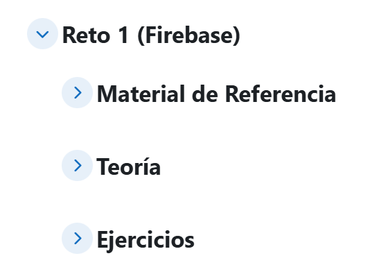
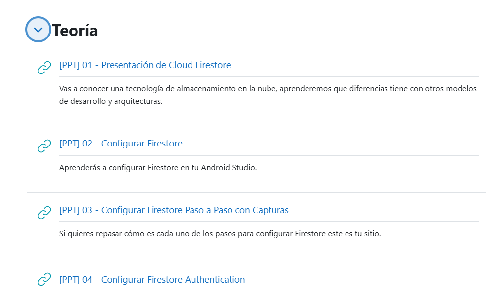
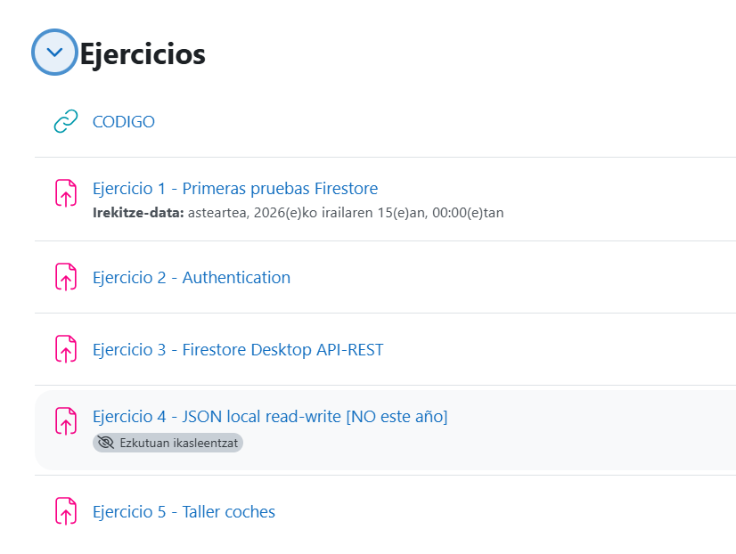
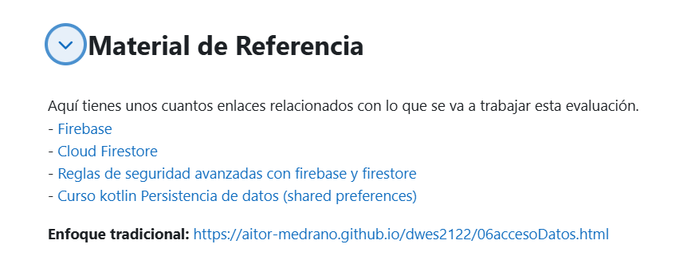

Para que el alumnado pueda trabajar el tema propuesto de manera colaborativa, tendrás que poner los contenidos digitales y recursos creados a su disposición en la plataforma de aprendizaje.
¿Cómo evidenciar?
Nota: si creas un vídeo como contenido digital, para evitar problemas de autoría, tu locución debe ir acompañada de tu propia imagen.
Indicadores de logro:
El objetivo de esta entrega es demostrar que tanto el contenido básico como el avanzado están disponibles en la plataforma Moodle para su trabajo síncrono y asíncrono por parte del alumnado.
En Moodle se integra todo el contenido básico para el proceso de enseñanza-aprendizaje del alumnado

En el Moodle se han puesto enlaces hacia los documentos de Drive. De manera que en cuanto actualizamso y mejoramos los contenidos educativos, el alumnado dispondrá instanteneamente de esos cambios.

Mediante los ejercicos el alumnado puede profundizar en los conocimientos transmitidos durante las clases, esto permite profundizar y afianzar los conocimientos de manera práctica y participativa.

Además se les provee de otras fuentes de información donde pueden consultar lo trabajado en clase en otros formatos y de otras fuentes.
